Of all the biryanis I have tried and tasted, Thalassery Biriyani is my favourite! This recipe is my tribute to this traditional favourite that I can never get enough of!
|
Made ByOf all the biryanis I have tried and tasted, Thalassery Biriyani is my favourite! This recipe is my tribute to this traditional favourite that I can never get enough of! |
Of all the biryanis I have tried and tasted, Thalassery Biriyani is my favourite! This recipe is my tribute to this traditional favourite that I can never get enough of!
This recipe is inspired from a weekend cooking session with my cousin and her friend, who is from Thalassery. She had her mom’s recipe, and we had all the ingredients. She led the cooking, while we helped with prepping the ingredients. The results were amazing. That was one of the best home cooked biriyanis that I have ever come across!
This recipe is a slightly altered version I have been working on. I am planning to revisit this soon. I hope this rendition has done justice to the original!

Thalassery Chicken Biriyani served with Raita
Biriyani requires a lot of tender loving care. The process is elaborate, and spending some time in the kitchen is required, but the results are worth waiting for. I have used Basmati rice in this recipe. I have also cheated on the dum cooking – without compromising much on the flavours. Go ahead, plan and prep your ingredients, and start cooking. The aromas of spices getting fried will get you going!
| Thalassery Chicken Biryani Thalassery Biriyani is a delicious mix of fragrant rice, spices, and chicken in a soulful gravy, married together by slow cooking to absorb the flavours |
|
|---|---|
| Ingredients 1) For chicken masala * 1.2 kg chicken full chicken cut to medium pieces * 8 medium onions * 20 green chillies moderately hot * 15 cloves garlic * 2 inch ginger * 7 medium tomatoes ripe * 1 cup mint leaves chopped * 1 1/2 cup cilantro coriander leaves * 1 teaspoon cumin seeds * 2 teaspoon fennel seeds * 3 cardamom * 4 inch cinnamon pieces * 1/4 nutmeg one small piece * 4 tablespoon yogurt * salt to taste 2) For rice * 800 gram basmati rice 4 cups * 3 bay leaves * 2 cardamom * 2 inch cinnamon piece * 1 star anise * 1 mace * 10 black peppercorn * 1 lime small * salt to taste 3) For garnish * 2 onions thinly sliced * 1 cup sultana raisins * 1 cup Cashew nuts * salt to taste Instruction 1) Add one teaspoon turmeric powder, one tablespoon Kashmiri chili powder, two tablespoons yogurt, and salt to the chicken. 2) Mix well until the chicken pieces are coated well with this marinade. Keep it aside.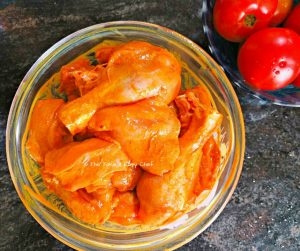 3) Wash and soak 4 cups of rice in water. The rice should be soaked for at least 1 hour. Chicken masala 1) Let's prep the ingredients for biriyani masala. Thinly slice the onions.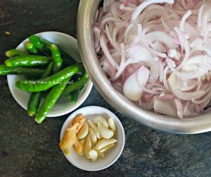 2) Heat a cup of oil in a large pan. Once the oil is hot, lower the flame, and add the sliced onions to fry. Stir occasionally.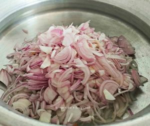 3) Give the green chilies, ginger, and garlic a quick blitz to make a coarse paste. 4) Slow-cook the onions till they turn brown, and add the ginger-garlic-chili paste.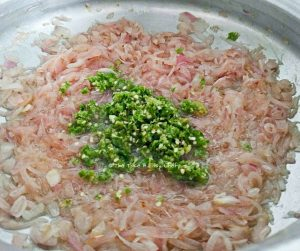 5) Combine well, and cook for a few minutes. Now add the chopped tomatoes, and continue cooking.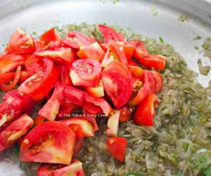 6) Cook the tomatoes until they disappear into the mix.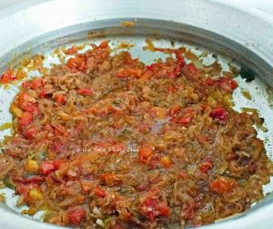 7) Now add chopped coriander leaves and mint leaves. Mix well, and cook for 2-3 minutes.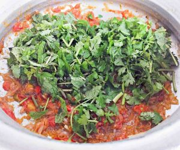 8) Now add the marinated chicken pieces, two tablespoons yogurt, and salt to the pan. Mix gently to get chicken pieces evenly coated with the onion masala in the pan.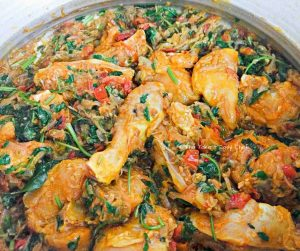 9) Close with a lid, and cook covered till the chicken is cooked to soft.
10) Powder cinnamon, cardamom, cumin seeds, fennel seeds, and nutmeg to a coarse powder.
This is our garam masala powder.
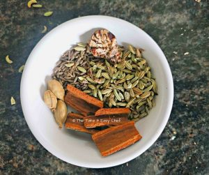
11) Open the lid, add the garam masala to the cooked chicken, mix well, and cook for another 3 minutes.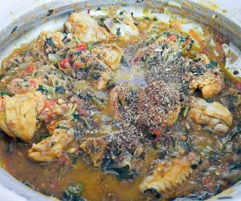 12) Switch off the flame. That completes the first part of our biriyani - the chicken masala. Make sure that the chicken masala is moist enough so that biriyani won't go dry when we add rice later. Cooking rice 1) In another pan heat 3 tablespoons oil and 3 tablespoons ghee on a medium flame. Fry 2 sliced onions, raisins, and cashew nuts until the onions turn brown.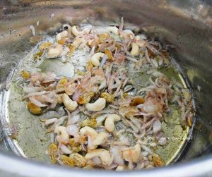 2) Lower the flame. Scoop them out, and leave them on a paper towel to soak up the extra oil.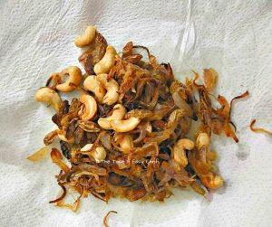 3) Add the whole spices to the same pan and give them a quick fry.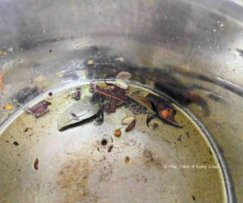 4) Drain off the water from the rice, and add it to the pan. 5) Stir gently, and fry to get the rice to a crispy texture. Add boiling water to the pan to cook the rice your are using. Squeeze one lime, add salt, and mix well.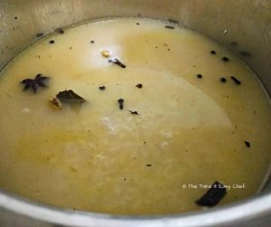 5) Switch off the flame once the rice is cooked just enough.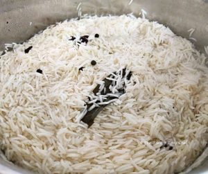 Layering the biriyani 1) Now we'll bring together all these elements to complete our biriyani. 2) From the pan, transfer half of the cooked rice to a bowl. 3) Evenly spread the cooked chicken masala on top of the remaining rice in the pan. 4) Now spread the remaining rice on the chicken masala. Now we a layer of rice, a layer of chicken masala, and another layer of rice.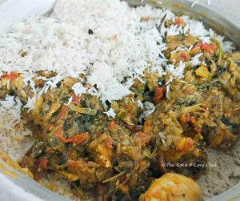 5) Garnish with the fried onions, sultanas, and cashew nuts that we had kept aside. 6) Close the lid. Cover tightly along the edges with aluminium foil. You can place something heavy on the lid to make it airtight. 7) On a low flame, cook again for 10 minutes. 8) Switch off the flame, open the lid, and serve the biriyani hot. Accompanied with raita, papad, and green chilly chutney.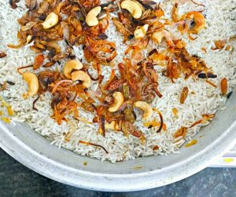 |